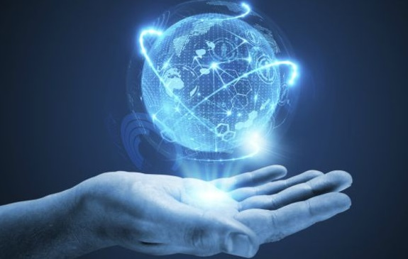

T E K N O L O G I

Teknologi adalah keseluruhan sarana untuk menyediakan barang-barang yang diperlukan bagi
kelangsungan dan kenyamanan hidup manusia. Penggunaan teknologi oleh manusia dimulai
dengan pengubahan sumber daya alam menjadi alat-alat sederhana.
Penemuan prasejarah
tentang kemampuan mengendalikan api telah menaikkan ketersediaan sumber-sumber
pangan, sedangkan penciptaan roda telah membantu manusia dalam bepergian dan
mengendalikan lingkungan mereka. Perkembangan teknologi terbaru, termasuk di
antaranya mesin cetak, telepon, dan Internet, telah memperkecil hambatan fisik
terhadap komunikasi dan memungkinkan manusia untuk berinteraksi secara bebas dalam
skala global. Tetapi, tidak semua teknologi digunakan untuk tujuan damai.
Pengembangan senjata penghancur yang semakin hebat telah berlangsung sepanjang
sejarah dari pentungan sampai senjata nuklir.
F U N G S I
Adapun beberapa fungsi teknologi antara lain yaitu:
1.Memberikan kemudahan bagi para manusia dalam menciptakan
pekerjaan baru agar menjadi lebih singkat dan lebih cepat,
atau bisa dikatakan lebih efisien.
2.Dapat menciptakan peluang untuk menghasilkan uang.
3.teknologi bisa dipakai menjadi wahana eksplorasi guna menambah wawasan dan
pengetahuan.
BIOMETRIC SENSOR
Contoh teknologi modern yaitu biometric sensor. Biometric sensor hampir sama dengan teknologi
Apple yang digunakan untuk otorisasi kartu kredit saat melakukan pembayaran dengan Pay Apple.
Perlu diketahui, jika biasanya Anda harus menggunakan password untuk mengakses sebuah situs,
maka dengan biometric sensor Anda akan dapat masuk dengan lebih mudah lagi.
D A M P A K
Dampak positif teknologi, diantaranya meningkatkan efisiensi aktivitas pekerjaan, mempermudah dan
mempersingkat pertukaran informasi, memungkinkan pembelajaran online, dan dapat berkomunikasi antar masyarakat.
Selain dampak positif, teknologi dapat menjadi dampak negatif bagi penggunanya, diantaranya membuat candu terhadap
telepon genggam yang di miliki dan aplikasi yang ada di dalam nya, berkurang nya sosialisasi antar masyarakat.
Maka dari itu, peran dari orang tua sangatlah penting untuk mengawasi anak nya bermain internet. Karena dapat
mengubah pola pikir anak dan dapat kecanduan dalam bermain internet. Banyak anak-anak yang seharusnya waktu nya
di habiskan untuk bermain dengan teman-teman sebayanya, namun di gunakan untuk bermain internet.
Dari dampak positif dan negatif dapat disimpulkan bahwa teknologi yang terus berkembang dapat membuat hidup kita
lebih nyaman, walaupun seperti itu, bila tidak digunakan dengan bijak dapat menimbulkan dampak negatif yang justru
memperburuk kualitas hidup. Bagaimana sikap kita menyikapi dari dampak-dampak perkembangan teknologi tersebut? semua
ini tergantung pada diri kita sendiri.
Dengan kemajuan teknologi yang begitu pesat ini, seolah-olah dunia tidak ada batas. Hal ini di sebabkan karena
akses informasi dalam kehidupan sehari-hari. Dimana kita bisa mengetahui peristiwa di seluruh penjuru dunia, walaupun
kita berada jauh di tempat lokasi kejadian. Berbagai macam media untuk berkomunikasi pun hadir untuk memudahkan masyarakat
berinteraksi seiring dengan perkembangan zaman. Salah satu nya adalah penggunaan media sosial secara online. Dimana media
ini dapat digunakan untuk menuangkan ide, mengekspresikan diri sesuai apa yang dirasakan. Kehadiran media sosial memberikan
kemudahan bagi masyarakat untuk berkomunikasi dan bersosialisasi.
S E J A R A H

Sejarah teknologi adalah sejarah yang berkaitan dengan alat dan teknologi atau teknik hasil penemuan manusia yang pada
akhirnya dapat digunakan untuk memudahkan aktivitas manusia itu sendiri. Sejarah teknologi dimulai dari munculnya spesies
manusia di muka bumi, jejak-jejak peralatan dan teknologi yang dimiliki manusia sejak awal peradabannya ditemukan, kemudian
direkontruksi secara historis dan kemudian dianalisis kaitannya dengan perkembangan peradaban manusia. Sejarah teknologi manusia
dimulai dari hal sederhana seperti pengembangan bahasa, pembuatan perkakas dari batu hingga yang sangat rumit seperti komputer kuantum.
Berkembangnya suatu teknologi aplikatif dapat ditinjau dari kebutuhan manusia sendiri untuk seperti mengatasi perubahan cuaca dan iklim,
menghadapi serangan hewan buas, mempermudah aktivitas ekonomi hingga peperangan. Namun teknologi juga dapat berkembang dari aspek teoretis yakni
hanya berlandaskan keingintahuan manusia akan fenomena alam yang terjadi disekitarnya, seperti penemuan hukum gravitasi dan kalkulus oleh Isaac Newton
dan Leibniz. Sains dan teknologi adalah dua hal yang tidak dapat dipisahkan begitu pula sejarah dan perkembangannya. Namun demikian tentu saja dapat
terlihat perbedaan yang mencolok saat membahas sejarah dan perkembangan teknologi, sejarah teknologi membahas aspek terapan dari sains, seperti penemuan
peralatan atau teknik untuk memudahkan suatu aktivitas manusia. Sedangkan sejarah sains mempunyai cangkupan yang lebih luas karena mengkaji suatu gejala
alam atau gejala yang terjadi di kehidupan manusia berdasarkan aspek-aspek teoretis ataupun yang berkaitan dengan hal-hal abstrak secara matematis
hingga ranah filsafat.
Karena teknologi merupakan suatu hal yang aplikatif, maka perkembangan teknologi sangat mempengaruhi perubahan aktivitas ekonomi,
sosial, politik, dan budaya dari kehidupan manusia, sehingga sejarah teknologi dapat pula direkontruksi berdasarkan perubahan-perubahan ini.
Sejarah teknologi membahas perkembangan teknologi secara umum. Sains dan teknologi adalah suatu hal yang sangat luas.
Untuk detail yang lebih akurat dari sejarah dan perkembangan dari suatu bidang sains atau teknologi, lebih tepat jika sejarah dari
suatu bidang sains atau teknologi ditinjau satu-persatu berdasarkan bidang yang dimaksud dengan tekhnologi.
MY PROFILE
NAMA : SALSA SYIFA SABRINA
NIM : 10122157
KELAS : IF - 5